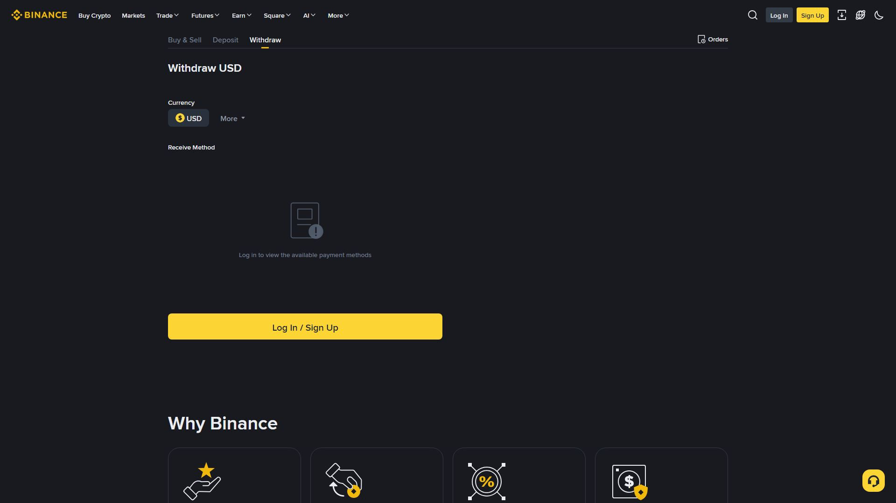

کرپٹو وائیدراول (Withdraw) = بائننس کے Spot Wallet سے اپنا کوائن کسی بیرونی والٹ یا دوسرے ایکسچینج میں منتقل کرنا۔ یہ ڈیپازٹ کا بالکل اُلٹ عمل ہے، اور اس کا سب سے بڑا خطرہ غلط نیٹ ورک یا غلط ایڈریس ہے — جس پر فنڈ ہمیشہ کے لیے ضائع ہو سکتا ہے۔ یہ باب آپ کو ایک محفوظ، دہرائے جانے والا طریقہ سکھائے گا۔

Wallet → Withdraw → Coin منتخب → Network منتخب → Address + Memo → Amount → Confirm💡 وائیدراول Spot Wallet سے ہوتا ہے۔ اگر آپ کے فنڈز Futures، Margin یا Earn میں ہیں تو پہلے Transfer کے ذریعے Spot Wallet میں لائیں۔
| مرحلہ | عمل |
|---|---|
| 1 | Wallet → Withdraw کھولیں |
| 2 | کوائن منتخب کریں (مثلاً USDT) |
| 3 | Network منتخب کریں (مثلاً TRC20) |
| 4 | ایڈریس پیسٹ کریں (اور Memo، اگر لازمی ہو) |
| 5 | مقدار درج کریں — فیس اور وصولی کی رقم دیکھیں |
| 6 | Preview → 2FA / Email تصدیق → Submit |
⚠️ بائننس ہر وائیدراول پر ای میل اور 2FA (یا Passkey) سے تصدیق مانگتا ہے۔ یہ اضافی حفاظت ہے، مسئلہ نہیں — لاپرواہی نہ کریں۔
Address Whitelist = ایسے ایڈریسز کی فہرست جنہیں آپ پہلے سے منظور کر چکے ہیں۔ اس کے فعال ہونے کے بعد وائیدراول صرف اُنہی ایڈریسز پر ممکن ہوتا ہے۔
Profile → Security → Address Management (Whitelist)
→ Add Address → ایڈریس + نام (مثلاً "Trust Wallet")
→ Email + 2FA تصدیق → ہولڈ پیریڈ → فعال ✅| پہلو | وضاحت |
|---|---|
| حفاظت | ہیکر لاگ اِن کر بھی صرف منظور شدہ ایڈریس پر بھیج سکتا ہے |
| تصدیق | نیا ایڈریس شامل کرتے وقت Email + 2FA لازمی |
| ہولڈ | نئے ایڈریس پر سیکیورٹی ہولڈ (عام طور پر 24 گھنٹے، آپ کی سیٹنگ کے مطابق) |
| تبدیلی | ایڈریس تبدیل کرنے پر پھر ہولڈ لگتا ہے — ہڑبڑائی میں نقصان سے بچاؤ |
💡 اگر آپ Anti-Phishing Code سیٹ کریں تو وائیدراول کی ہر ای میل میں وہی کوڈ آئے گا۔ جعلی ای میل کے جال فوراً پکڑے جائیں گے۔
قاعدہ: بھیجنے والا نیٹ ورک اور وصول کرنے والا نیٹ ورک بالکل ایک جیسا ہونا چاہیے۔
| نیٹ ورک | مخفف | فیس کی نوعیت |
|---|---|---|
| Tron | TRC20 | کم |
| BNB Smart Chain | BEP20 | کم |
| Ethereum | ERC20 | زیادہ |
| کوائن | Memo/Tag |
|---|---|
| XRP (Destination Tag) | ✅ لازمی |
| XLM | ✅ لازمی |
| ATOM | ✅ لازمی |
| BNB (BEP2 چین) | ✅ لازمی |
| BTC / ETH / USDT (TRC20, ERC20, BEP20) | ❌ نہیں |
⚠️ مثال: آپ نے بائننس سے USDT نکالا TRC20 پر، مگر وصول کرنے والے والٹ کا ایڈریس ERC20 کا ہے (جو
0xسے شروع ہوتا ہے)۔ یہاں فنڈ یا تو وصول نہیں ہوگا، یا ہمیشہ کے لیے ضائع ہو جائے گا۔ ایڈریس کا شروع (prefix) خود بتا دیتا ہے کہ وہ کس نیٹ ورک کا ہے۔
0x... → Ethereum (ERC20 / BEP20 بھی 0x ہوتا ہے — نیٹ ورک سے ملائیں)
T... → Tron (TRC20)
bnb... → BNB Chain (BEP20)
bc1... → Bitcoin Native
rN... → Ripple (XRP) — Tag بھی لازمی💡 Prefix سے نیٹ ورک کا اندازہ لگتا ہے، مگر حتمی جواب کے لیے وصول کنندہ والٹ میں جا کر دیکھیں کہ وہ کس نیٹ ورک کا ایڈریس دے رہا ہے۔
| اصطلاح | مطلب |
|---|---|
| Withdrawal Fee | بائننس + نیٹ ورک کا چارج، ہر کوائن/نیٹ ورک پر مختلف |
| Minimum Withdrawal | کم از کم نکالی جانے والی مقدار |
| Daily Limit | 24 گھنٹے میں زیادہ سے زیادہ نکاسی (KYC لیول پر منحصر) |
| Arrival Time | نیٹ ورک کی تصدیق کے بعد — منٹوں سے گھنٹوں تک |
💡 فیس اور کم از کم مقدار وقت کے ساتھ بدلتی رہتی ہیں۔ وائیدراول سے پہلے ہمیشہ صفحے پر لکھی تازہ فیس دیکھیں — کسی پرانی گائیڈ پر اندھا اعتماد نہ کریں۔
1. کم از کم حد کے قریب چھوٹی رقم نکالیں (مثلاً $5)
2. بیرونی والٹ میں موصولی کی تصدیق کریں
3. نیٹ ورک اور ایڈریس درست ہیں؟ — اب بڑی رقم نکالیں✅ "پہلے چھوٹا، پھر بڑا" — یہ ایک عادت آپ کو ہزاروں ڈالر کے نقصان سے بچا سکتی ہے۔
وائیدراول میں "Undo" نہیں ہوتا۔ بینک ٹرانسفر واپس منگائی جا سکتی ہے، مگر بلاک چین کی ٹرانزیکشن نہیں۔ ایک غلط ایڈریس یا غلط نیٹ ورک کا مطلب ہے پیسہ ہمیشہ کے لیے گیا۔ اسی لیے یہ چار عادتیں اپنائیں: Whitelist، Anti-Phishing Code، پہلے چھوٹا ٹیسٹ، TXID محفوظ۔